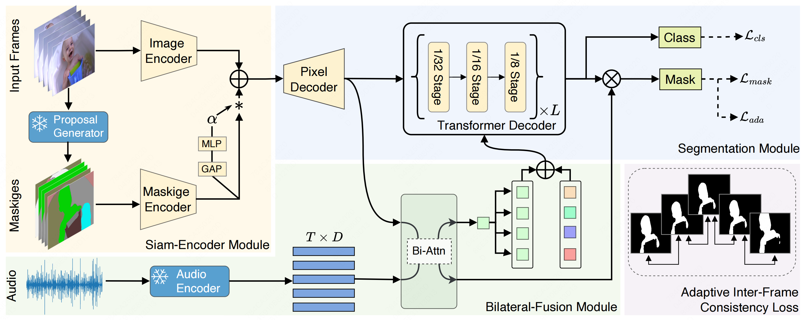
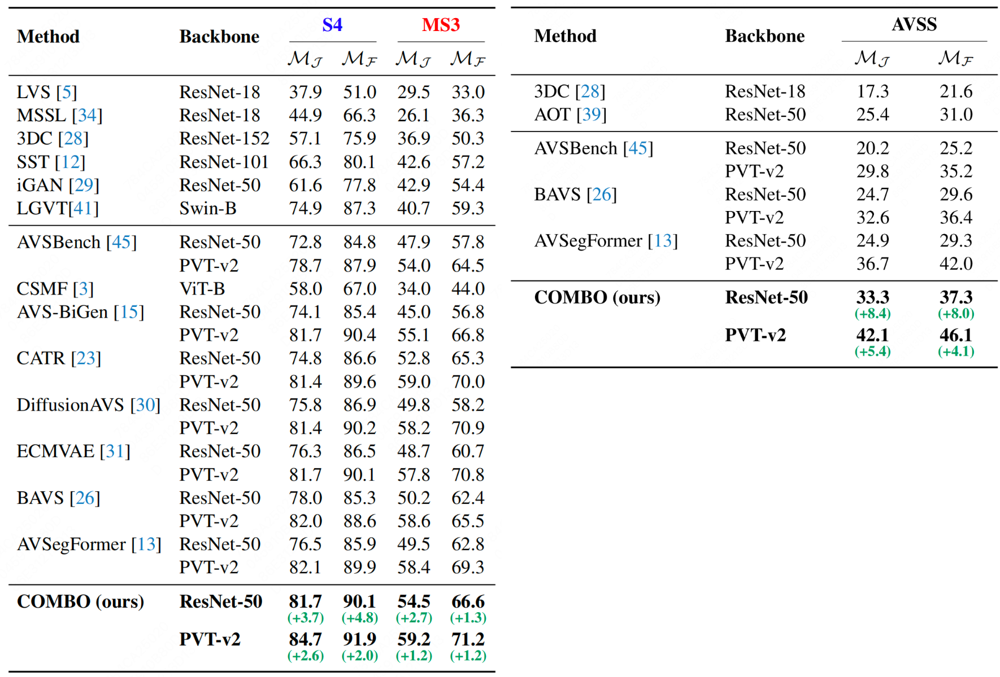

Architecture
Overview of the proposed COMBO. COMBO adopts a novel audio-visual transformer framework for audio-visual segmentation.
Recently, an audio-visual segmentation (AVS) task has been introduced, aiming to group pixels with sounding objects within a given video. This task necessitates a first-ever audio-driven pixel-level understanding of the scene, posing significant challenges.
In this paper, we propose an innovative audio-visual transformer framework, termed COMBO, an acronym for COoperation of Multi-order Bilateral relatiOns. For the first time, our framework explores three types of bilateral entanglements within AVS: pixel entanglement, modality entanglement, and temporal entanglement. Regarding pixel entanglement, we employ a Siam-Encoder Module (SEM) that leverages prior knowledge to generate more precise visual features from the foundational model. For modality entanglement, we design a Bilateral-Fusion Module (BFM), enabling COMBO to align corresponding visual and auditory signals bi-directionally. As for temporal entanglement, we introduce an innovative adaptive inter-frame consistency loss according to the inherent rules of temporal.
Comprehensive experiments and ablation studies on AVSBench-object (84.7 mIoU on S4, 59.2 mIou on MS3) and AVSBench-semantic (42.1 mIoU on AVSS) datasets demonstrate that COMBO surpasses previous state-of-the-art methods.
Overview of the proposed COMBO. COMBO adopts a novel audio-visual transformer framework for audio-visual segmentation.
We evaluate our proposed method on the AVSBench dataset that consists of two scenarios: AVSBench-object and AVSBench-semantic. The download link is at AVSBench.
These experiments confirm that our COMBO model surpasses the performance of existing state-of-the-art methods, consequently setting a new benchmark for audio-visual segmentation.
As depicted in the figure, our proposed method, COMBO, exhibits superior audio-temporal and spatial localization quality, leading to better visualization and segmentation performance.
@article{yang2023cooperation,
author={Qi Yang and Xing Nie and Tong Li and Pengfei Gao and Ying Guo and Cheng Zhen and Pengfei Yan and Shiming Xiang},
title={Cooperation Does Matter: Exploring Multi-Order Bilateral Relations for Audio-Visual Segmentation},
booktitle={arXiv preprint arxiv:2312.06462},
year={2023}
}